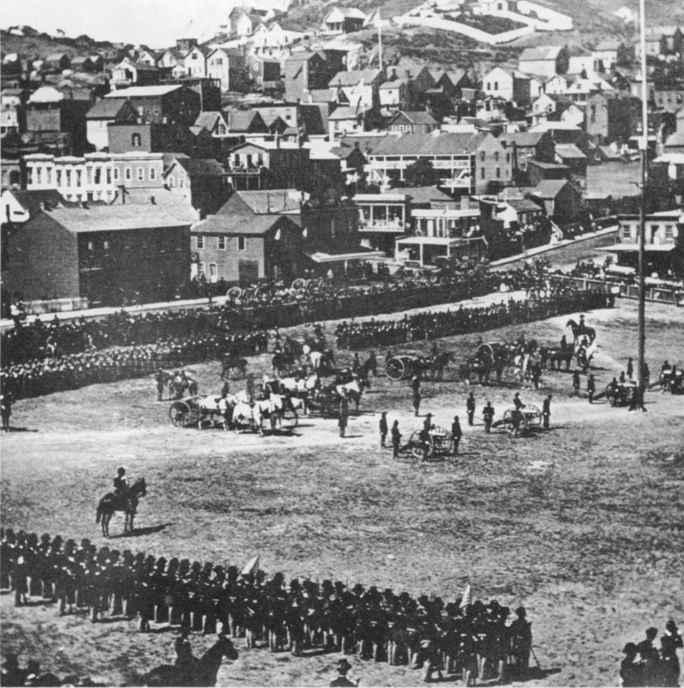
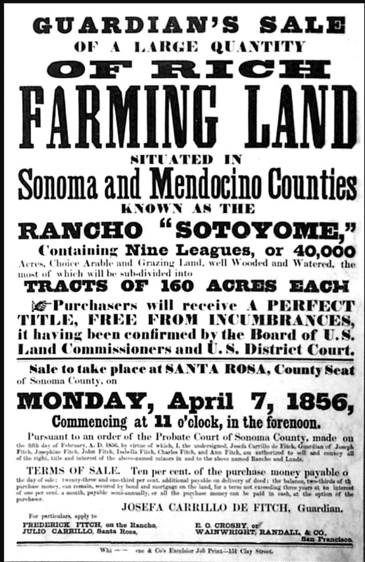

The Healdsburg Squatters' Wars
© 2020 Hannah Clayborn All Rights Reserved
|
In the late 1980s I became fascinated with a stubborn and unruly group of settlers who waged a battle to keep their pre-empted land for over a decade, from 1852 to 1863. The story is layered, misleading, tragic, and comic in turns, or sometimes all at the same time.
The Healdsburg Squatters' Wars were the longest-running in California. They drew in almost every aspect and faction in settlement-era Healdsburg. You will come across most of the people you have met thus far on this website. With a story so complex, so misunderstood until 1990, I attempted nonetheless to make it read like a novel when I chose it as a subject for my thesis for a Masters of Arts in History at Sonoma State University. You can access it at the link below. A Promised Land: Grantees, Squatters, and Speculators in the Healdsburg Land Wars  The Healdsburg Squatters organized themselves as a para-military group emulating the California state militias. California Troops in Washington Square, San Francisco, July 4 1862 (California Historical Society).
 Poster for the fateful Sotoyome Rancho land auction of 1856. (Healdsburg Museum)
|